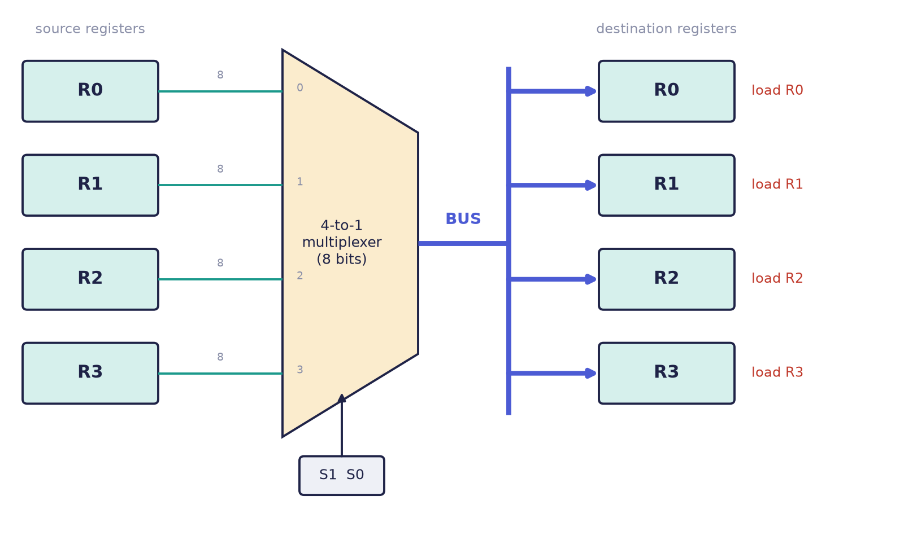
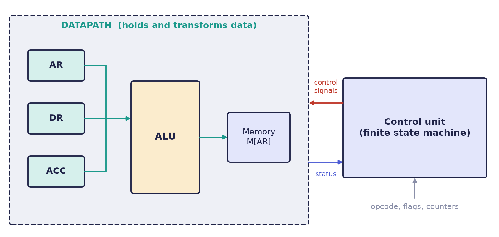
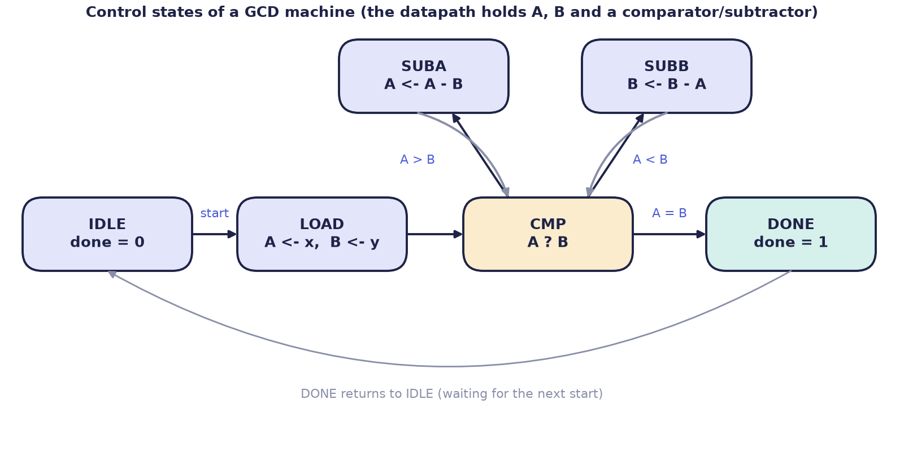

Chapter 2: Buses, Memory, Datapath and Control¶
Chapter 1 gave us registers and the microoperations that move data between them. This chapter shows how many registers share their wires, how a whole memory fits into the same notation, and how every RTL design splits into a part that holds data (the datapath) and a part that decides what happens to it (the control unit). It closes with a complete worked design, a machine that computes the greatest common divisor, and with the first look at how an RTL description turns into a hardware description language.
2.1 Buses¶
If every register could talk to every other register through its own private wires, a machine with \(n\) registers would need \(n(n-1)\) one-way paths. Four 8-bit registers would need 12 paths of 8 wires each, 96 wires in all, and a sixteen-register machine would need 240 paths. Real machines share wiring through a bus: one common set of wires that, at any moment, carries the value of exactly one chosen register, and from which any register may load. Four 8-bit registers on one bus need only 8 wires, plus a few control lines to choose the source.
There are two classic ways of building a bus.
The multiplexer bus¶
A bank of multiplexers, one per bit, selects which register drives the bus. With four registers, a 4-to-1 multiplexer on each bit chooses among R0 to R3, using two select lines S1 S0. Any register whose load signal is 1 copies the bus at the next clock edge (Figure 2.1). This form is purely combinational, it can never short-circuit, and it is what synthesis tools actually build from an HDL description.

The tri-state bus¶
In the second form each register reaches the bus through a three-state buffer. When enabled, the buffer passes its register's value; when disabled, its output is in the high-impedance state, written Z, which is electrically a disconnection. This saves logic on a long physical bus, but the control must guarantee that exactly one buffer is enabled at a time. Two drivers fighting, one pushing a 1 and the other a 0, is a short circuit. Inside a chip, tools build the multiplexer form; tri-state buses belong to board-level wiring and chip pins.
A bus transfer is written like any other transfer, naming the bus when it matters:
BUS <- R1, R2 <- BUS put R1 on the bus, load it into R2
R2 <- R1 shorthand for the same thing, when the bus is implied
2.2 Memory¶
Memory is treated as one large array of registers, addressed through an address register AR. Mano's notation writes M[AR] for "the memory word that AR selects". A read copies the addressed word into a data register, and a write overwrites it:
Read: DR <- M[AR] load the data register from the addressed word
Write: M[AR] <- R1 store R1 into the addressed word
Both take one clock pulse, and both are microoperations like any other.
Example 2.1: which address does a read use?
In one clock pulse the transfers DR ← M[AR], AR ← AR + 1 are performed. Which word is read?
- Every right-hand side is sampled before any register is written.
- So
M[AR]is evaluated withARas it was when the pulse began, the old address. - The increment lands at the same edge, leaving
ARpointing at the next word, ready for the next read.
This is exactly how a processor steps through consecutive words of memory, and it is why AR and DR can safely be changed in the same pulse as the read.
2.3 Datapath and control¶
An RTL system divides cleanly into two cooperating parts (Figure 2.2).
- The datapath is where data lives and is transformed: the registers, the ALU, shifters, buses and multiplexers. It answers what can be computed.
- The control unit is a finite state machine, a circuit that is always in one of a few named states and moves between them on clock edges. It watches status flags coming back from the datapath (for example, "the result was zero"), an instruction's opcode or a counter, and on every cycle asserts the control signals that make the datapath perform the right microoperation. It answers in what order.

Return to the conditional transfer P: R2 ← R1. The P is a control signal. Somewhere in the datapath it enables the load line of R2 and steers the multiplexers so that R1 is on the bus. The control unit's whole job is to produce a correctly timed sequence of such signals. The datapath is the orchestra and the control unit is the conductor; neither makes music alone.
Control as a schedule of signals¶
Take a tiny machine that adds the word at memory address 20 to the accumulator. Each row of the following table is one clock cycle, and the control unit asserts the signals on that row.
| Cycle | Microoperation | Signals the control unit raises |
|---|---|---|
| T0 | AR ← 20 |
select the constant 20 onto the bus; load AR |
| T1 | DR ← M[AR] |
memory read; load DR |
| T2 | ACC ← ACC + DR |
ALU operation = add; load ACC |
| T3 | (done) | return to waiting |
Almost every hardware bug turns out to be this: the right signal, on the wrong cycle.
Two ways to build a control unit¶
| Hardwired control | Microprogrammed control | |
|---|---|---|
| How signals are generated | Gates and a state register compute every control signal directly | A small ROM stores one word per step; the bits of the word are the control signals |
| Speed | Fast | Slower: an extra memory read at each step |
| Changing it | Redesign the logic | Rewrite the ROM |
| Typical home | Simple, fast processors with a small and regular instruction set | Older processors with large and complicated instruction sets |
When you write a state machine in Verilog or VHDL, you are writing hardwired control.
2.4 From RTL to a hardware description language¶
Here the notation pays off, because a single register transfer maps almost mechanically onto both Verilog and VHDL. Consider an accumulator that adds a data register into itself when the control signal load is 1. Mano would write load: ACC ← ACC + DR. The same microoperation in three notations:
load: ACC <- ACC + DR
module accumulator (
input clk,
input load,
input [7:0] DR,
output reg [7:0] ACC
);
always @(posedge clk) begin
if (load)
ACC <= ACC + DR; // load: ACC <- ACC + DR
end
endmodule
library ieee;
use ieee.std_logic_1164.all;
use ieee.numeric_std.all;
entity accumulator is
port ( clk : in std_logic;
load : in std_logic;
DR : in unsigned(7 downto 0);
ACC : out unsigned(7 downto 0) );
end accumulator;
architecture rtl of accumulator is
signal acc_r : unsigned(7 downto 0) := (others => '0');
begin
process (clk)
begin
if rising_edge(clk) then
if load = '1' then
acc_r <= acc_r + DR; -- load: ACC <- ACC + DR
end if;
end if;
end process;
ACC <= acc_r;
end rtl;
Read the three side by side and the correspondence is complete:
| In RTL | In Verilog | In VHDL |
|---|---|---|
| "at the next clock edge" | always @(posedge clk) |
if rising_edge(clk) |
the control function load: |
if (load) |
if load = '1' then |
the arrow ← |
<= |
<= |
Learning a second language is therefore mostly learning a new spelling of three ideas you already have: the clock edge, the condition and the transfer. The arrow becomes the non-blocking assignment <= in Verilog and the signal assignment <= in VHDL, both of which defer the write to the end of the time step, so that all right-hand sides are read first. That is precisely the "read everything, then write everything" rule of the previous chapter.
Why not the blocking assignment?
A blocking assignment = in Verilog takes effect immediately, like a statement in a program. In the swap R1 ← R2, R2 ← R1 it would copy R2 into R1 first and then copy the new R1 back, leaving both registers equal. Chapters 3 and 4 treat the two kinds of assignment in detail.
2.5 A worked design: a greatest-common-divisor machine¶
The three levels of Chapter 1 described a machine that finds the greatest common divisor of \(A\) and \(B\) by repeated subtraction. We now design it properly, as a datapath and a control unit.
Algorithm. While \(A \ne B\): if \(A > B\) replace \(A\) by \(A - B\), otherwise replace \(B\) by \(B - A\). When \(A = B\), that common value is the greatest common divisor. (The algorithm assumes both inputs are positive. If either were zero the subtraction would never make progress.)
Datapath. Two registers A and B, a comparator that reports whether \(A = B\) or \(A > B\), and a subtractor in front of each register. The status signals returned to the control unit are A == B and A > B.
Control. One state to wait for a start request, one to load the inputs, one to compare, one to subtract each way, and one to announce that the result is ready (Figure 2.3).

The microoperations belonging to each state, in Mano's notation, are:
| State | Control function | Microoperation | Next state |
|---|---|---|---|
IDLE |
— | none | LOAD if start, else IDLE |
LOAD |
S_LOAD |
A ← x, B ← y |
CMP |
CMP |
— | none | DONE if \(A = B\); SUBA if \(A > B\); otherwise SUBB |
SUBA |
S_SUBA |
A ← A − B |
CMP |
SUBB |
S_SUBB |
B ← B − A |
CMP |
DONE |
— | none (done = 1) |
IDLE once start is low |
The table converts directly into code, using the three-block structure that Chapter 4 explains: a state register, next-state logic, and the datapath registers with their outputs.
module gcd #(parameter W = 8) (
input wire clk,
input wire rst_n,
input wire start,
input wire [W-1:0] x,
input wire [W-1:0] y,
output wire [W-1:0] result,
output wire done
);
localparam [2:0] S_IDLE = 3'd0, S_LOAD = 3'd1, S_CMP = 3'd2,
S_SUBA = 3'd3, S_SUBB = 3'd4, S_DONE = 3'd5;
reg [2:0] state, next;
reg [W-1:0] A, B;
// control: state register
always @(posedge clk or negedge rst_n)
if (!rst_n) state <= S_IDLE;
else state <= next;
// control: next-state logic
always @(*) begin
next = state;
case (state)
S_IDLE: if (start) next = S_LOAD;
S_LOAD: next = S_CMP;
S_CMP: if (A == B) next = S_DONE;
else if (A > B) next = S_SUBA;
else next = S_SUBB;
S_SUBA: next = S_CMP;
S_SUBB: next = S_CMP;
S_DONE: if (!start) next = S_IDLE;
default: next = S_IDLE;
endcase
end
// datapath: the registers and their microoperations
always @(posedge clk) begin
case (state)
S_LOAD: begin A <= x; B <= y; end
S_SUBA: A <= A - B;
S_SUBB: B <= B - A;
default: ;
endcase
end
assign result = A;
assign done = (state == S_DONE);
endmodule
Example 2.2: tracing gcd(12, 18)
Let x = 12, y = 18 and start = 1. Each row is one clock cycle: the state the machine is in during the cycle, the microoperation of that state, and the register contents after the edge that ends the cycle.
| Cycle | State | Microoperation | \(A\) after | \(B\) after | Decision for the next state |
|---|---|---|---|---|---|
| 0 | IDLE |
none | ? | ? | start = 1, go to LOAD |
| 1 | LOAD |
A ← 12, B ← 18 |
12 | 18 | go to CMP |
| 2 | CMP |
none | 12 | 18 | \(A < B\), go to SUBB |
| 3 | SUBB |
B ← 18 − 12 |
12 | 6 | go to CMP |
| 4 | CMP |
none | 12 | 6 | \(A > B\), go to SUBA |
| 5 | SUBA |
A ← 12 − 6 |
6 | 6 | go to CMP |
| 6 | CMP |
none | 6 | 6 | \(A = B\), go to DONE |
| 7 | DONE |
none | 6 | 6 | done = 1, result = 6 |
The machine announces its answer, \(6\), seven clock cycles after it left IDLE. Notice that the datapath registers change only in the three states that name a microoperation, and that the decisions in CMP read the status of the registers as they stand at the start of the cycle.
The design shows the division of labour clearly. The always @(*) block is purely the schedule: it never touches A or B. The clocked block with the case is purely the datapath: it never decides what comes next. Almost every controller in a real chip, from a UART to a memory controller, has this shape.
2.6 Summary¶
- A bus is one set of shared wires carrying one register at a time. A multiplexer bus is purely combinational and is what synthesis builds; a tri-state bus needs control that guarantees one driver.
- Memory is a large array of registers addressed through
AR;M[AR]names the addressed word, and a read or a write is an ordinary microoperation. A read in a pulse uses the address as it was at the start of the pulse. - Every design divides into a datapath (what can be computed) and a control unit (in what order), the control unit being a finite state machine that may be hardwired or microprogrammed.
- A conditional transfer maps almost mechanically onto HDL: the edge, the condition and the arrow each acquire a spelling.
- A small machine such as the GCD unit is designed by listing the registers, the status signals, the states with their microoperations and the next-state decisions, and then writing the three parts of the code.
2.7 Exercises¶
Exercise 2.1. Eight 16-bit registers must be able to exchange data. How many wires does direct wiring of every pair need, and how many data wires does a multiplexer bus need? How many select lines does the bus multiplexer need?
Answer
Direct wiring needs \(n(n-1) = 8 \times 7 = 56\) one-way paths of 16 wires, which is \(896\) wires. A bus needs only 16 data wires. To choose among 8 sources the multiplexer needs \(\lceil \log_2 8 \rceil = 3\) select lines.
Exercise 2.2. Write the control schedule (cycle, microoperation, signals raised) for the instruction "add the contents of the memory word whose address is in AR to ACC, then increment AR". Can the increment share a cycle with another step?
Answer
One possible schedule uses three cycles. T0: DR ← M[AR] (memory read, load DR). T1: ACC ← ACC + DR (ALU add, load ACC). T2: AR ← AR + 1 (increment, load AR). The increment can share a cycle with the read, because the read samples AR at the start of the pulse: DR ← M[AR], AR ← AR + 1 in T0 is legal (Example 2.1), which shortens the schedule to two cycles.
Exercise 2.3. A word in memory is to be incremented in place: M[AR] ← M[AR] + 1. Memory has a single port, so only one access is possible per cycle. Give a sequence of microoperations that does it.
Answer
Memory cannot be read and written in the same cycle, so the update is split into three steps. T0: DR ← M[AR] (read). T1: DR ← DR + 1 (use the ALU). T2: M[AR] ← DR (write back). AR does not change during the sequence.
Exercise 2.4. Trace the GCD machine of Section 2.5 for x = 9, y = 6, giving the contents of A and B after each LOAD, SUBA and SUBB cycle and the final result.
Answer
After LOAD: \(A = 9\), \(B = 6\). In CMP, \(A > B\), so SUBA: \(A = 9 - 6 = 3\). In CMP, \(A < B\) (\(3 < 6\)), so SUBB: \(B = 6 - 3 = 3\). In CMP, \(A = B\), so the machine goes to DONE with result = 3, and \(\gcd(9, 6) = 3\).
Exercise 2.5. What does the GCD machine do if x = 0 and y = 5? Suggest a change that makes the design safe, and say where in the design it belongs.
Answer
After LOAD, \(A = 0\) and \(B = 5\). In every CMP cycle \(A < B\), so the machine enters SUBB and computes \(B \leftarrow 5 - 0 = 5\), again and again, and never reaches DONE. The fix belongs in the control: in LOAD (or in CMP) test whether either register is zero and, if so, go to DONE at once, with a convention such as returning the other operand, since \(\gcd(0, n) = n\). This adds one status signal (A == 0, B == 0) from the datapath and one extra branch in the next-state logic.
Exercise 2.6. A designer proposes to implement the control unit of a simple, fast processor as a microprogram stored in a ROM, "because it can be changed later". Give one argument for and one against.
Answer
For: a ROM-based control unit can be corrected or extended by rewriting the control memory, with no redesign of logic, which suits machines with large and complicated instruction sets. Against: each step costs an extra memory read, so the machine is slower, and a simple, regular instruction set (as in RISC designs) needs little control, which hardwired logic generates directly and quickly.